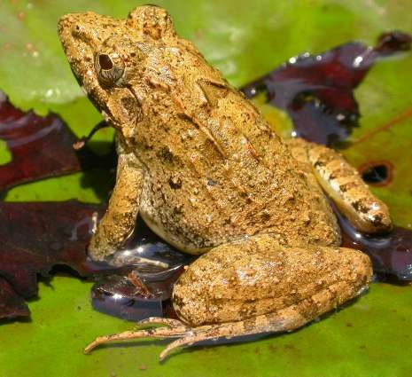

पहाड़ मेंढकIndian Bull Frog
Hoplobatrachus tigerinus · Dicroglossidae · AMP-0002

- Scientific name
- Hoplobatrachus tigerinus (Daudin, 1802)
- Family
- Dicroglossidae
- Hindi
- पहाड़ मेंढक / बड़ा मेंढक / राना
- Status here
- native
- IUCN
- LC
When to look कब देखें
Season not recorded.
पहाड़ मेंढक / Indian Bull Frog
Hoplobatrachus tigerinus (Daudin, 1802) — Dicroglossidae
पहाड़ मेंढक — मानसून में पूर्वी यूपी के तालाब और धान के खेत भारत के सबसे बड़े मेंढक की आवाज़ से गूँजते हैं। जब नर पीले हो जाते हैं, वे अद्वितीय लगते हैं। यह बरसात की हर बचपन की याद का मेंढक है।
हिंदी परिचय Hindi Overview
पहाड़ मेंढक (Hoplobatrachus tigerinus) दक्षिण एशिया का सबसे बड़ा मेंढक है — मादा 17 सेमी तक, वजन 600 ग्राम तक। पूर्वी उत्तर प्रदेश के हर तालाब में मानसून के समय मिलता है।
इसकी सबसे अद्भुत विशेषता है — प्रजनन मौसम में नर का पीला हो जाना। बाकी समय हरे-भूरे रंग का नर अचानक चमकीला पीला हो जाता है — जैसे कोई रंग चढ़ा दिया हो। यह हार्मोनल बदलाव है।
यह मेंढक पारिस्थितिक तंत्र का मध्यबिंदु है:
- खाता है: टिड्डे, केंचुए, छोटे साँप, छोटे मेंढक
- खाया जाता है: धामन, बगुला, नेवला, नीलकंठ
दुर्भाग्य से, इसे बड़े पैमाने पर खाद्य उद्देश्य के लिए पकड़ा जाता था — यूरोप और अमेरिका को मेंढक की टाँगें निर्यात की जाती थीं। भारत ने 1987 में मेंढक निर्यात पर रोक लगाई — जो इसके संरक्षण में सबसे बड़ा क़दम था।
Quick Identification त्वरित पहचान
| Feature | Description |
|---|---|
| Size | Large frog — females 14–17 cm, males 12–15 cm; the largest frog in the subcontinent |
| Non-breeding colour | Olive-green to brown-green above, with irregular dark spots and ridges |
| Breeding males | Turn bright lemon-yellow overall during June–August, with vocal sacs turning black |
| Skin | Smooth with two prominent dorsolateral folds running from behind the eyes to the lower back |
| Tympanum | Large, circular ear disc behind the eye; in males, it is larger than the eye |
| Call | Deep, resonant roaring call — carries hundreds of metres, sounding like a motor engine |
Morphology आकृति विज्ञान
Biometrics:
| Measurement | Range |
|---|---|
| Snout-vent length (SVL) | 120–170 mm |
| Weight | 250–600 g |
Size: Females 14–17 cm; males 12–15 cm. Weight up to 600 g in large females.
Dorsal surface: Smooth to slightly tuberculate. Olive-green, brown-green, or yellowish-green. Irregular dark spots and blotches. Two prominent dorsolateral folds (raised skin ridges) from behind the eye to the inguinal region — diagnostic of the genus.
Breeding coloration (males): At the onset of monsoon (June), breeding males transform from dull green-brown to bright lemon-yellow. The yellow is intense — often confused with a different species by people seeing it for the first time. Vocal sac region becomes black. Color reverts after breeding.
Tympanum: Large, distinctly visible, circular disc behind the eye. In males, tympanum diameter is visibly larger than the eye — helpful in sex determination.
Hindlegs: Very powerful; webbed feet for swimming; tibiotarsal joint reaches to or beyond the snout when leg extended forward.
Voice: Males call from water or vegetation at the water's edge. Call is a deep, resonant "kwaaah" or roaring sound — a chorus creates an intense sound field audible 300–500 m away.
हिंदी: मादा नर से बड़ी।
कान (tympanum) आँख से बड़ा होता है — नर की पहचान।
प्रजनन में नर का पीला रंग — हार्मोनल।
गहरी आवाज़ — 300–500 मीटर तक।
The Toxin — What It Does and Does Not Do ज़हर — क्या करता है, क्या नहीं
The original file does not contain any toxin warnings for this frog, but it is known that the skin is relatively free of the toxic cardiotoxins found in toads, although raw consumption can carry parasites.
Life Cycle / Phenology जीवन चक्र
- Dormancy: December–March; buried in soft soil near ponds and fields; metabolically reduced
- Emergence: April–May; begins foraging
- Breeding migration: Males move to ponds and flooded areas in May–June with first pre-monsoon rains; chorus begins
- Peak breeding: June–August (monsoon); male chorus at night (and often day) is continuous
- Eggs: Laid in large floating masses (spawn) — 3,000–10,000 eggs per clutch; multiple clutches per season possible
- Tadpoles: Hatch in 24–48 hours; metamorphosis complete in 4–7 weeks; juvenile froglets 2–3 cm
- Growth: Sexual maturity at 2 years; lifespan 5–8 years
हिंदी: दिसम्बर–मार्च: मिट्टी में निद्रा।
मई–जून: जागना, तालाब की ओर।
जून–अगस्त: अंडे — 3,000 से 10,000 एक बार में।
4–7 हफ्ते में टैडपोल → मेंढक।
2 साल में वयस्क।
Ecological Role पारिस्थितिक भूमिका
As a predator:
- Primarily eats invertebrates: grasshoppers (major component), beetles, earthworms, water insects
- Also eats small frogs (including its own young — tadpoles taken by adults), small snakes, small rodents, and occasionally small birds
As prey:
- Indian Rat Snake — primary predator; enters paddy and pond margins specifically to hunt bull frogs
- Indian Pond Heron — takes juveniles and medium-sized frogs
- Small Indian Mongoose
- Indian Eagle Owl
- Raptors (Short-toed Snake Eagle)
In the paddy ecosystem: Indian Bull Frog is one of the most important pest controllers in monsoon paddy. Grasshopper predation by the frog in flooded paddy fields is significant and measurable. Fields with healthy frog populations support reduced grasshopper pressure.
Indicator species: Healthy bull frog populations indicate: (a) ponds with minimal pesticide runoff, (b) adequate wetland connectivity, (c) absence of heavy hyacinth infestations (hyacinth blocks breeding access). Declining bull frog numbers are a reliable early warning of aquatic habitat degradation.
हिंदी: मुख्य शिकार: टिड्डे, केंचुए, कीट।
यह खुद: धामन, बगुला, नेवला का शिकार।
धान के खेत में टिड्डे खाता है — कृषि का दोस्त।
यह तालाब के स्वास्थ्य का सूचक है।
Agricultural / Human Relevance कृषि और मानव संबंध
Pest control: Bull frog consumes large numbers of paddy grasshoppers, beetles, and earthworms. In eastern UP's traditional farming system, frogs were recognized as beneficial and killing them was considered bad luck in some communities.
Export history: India was once a major exporter of frog legs (particularly H. tigerinus) to Europe and the USA — tonnes exported annually from UP, Bihar, and Bengal through the 1970s–80s. This led to significant population declines. The Wildlife Protection Act 1972 (Schedule IV) and the eventual ban on export in 1987 halted this industry. Populations have partially recovered but remain below pre-1970 levels.
Still poached: Small-scale collection for local consumption continues in some parts of eastern UP, particularly around wetlands in Basti and Bahraich districts.
Cultural significance: The call of the bull frog is inseparably linked to the monsoon in eastern UP. Its appearance marks the beginning of kharif sowing season. In some folk traditions, the frog's call is considered auspicious — "medhak bola, barish aai" (frog called, rain came).
हिंदी: 1987 तक यूरोप को मेंढक की टाँगें निर्यात।
WPA 1972 + 1987 निर्यात प्रतिबंध से बचाव।
"मेंढक बोला, बारिश आई" — लोककथा और असलियत दोनों।
Expected Locally स्थानीय रूप से अपेक्षित
Not a field record. Written from published accounts for eastern Uttar Pradesh. No confirmed local sighting yet — if you have seen it, that is what the atlas needs.
अभी तक स्थानीय पुष्टि नहीं। यह विवरण प्रकाशित स्रोतों से है, किसी अवलोकन से नहीं।
No observations yet — add observations of active bull frogs during early monsoon rains in local village ponds or flooded paddy fields.
Distribution वितरण
Global range: Widespread across South and Southeast Asia, with records from Pakistan, India, Nepal, Bangladesh, and Myanmar; introduced populations established in Madagascar and the Mascarene Islands.
In India: Widespread throughout the plains and peninsular regions of India, extending from the base of the Himalayas up to about 1,500 m elevation, but absent from arid desert regions.
In Uttar Pradesh: Abundant resident across the Gangetic plains of Uttar Pradesh, commonly found in permanent water bodies, flooded agricultural fields, and marshes.
In Basti district / eastern UP: Highly common resident throughout Basti district; heavily active in village ponds (talaabs), paddy fields, oxbow lakes, and marshy lowlands, particularly during the monsoon.
Range notes: No significant range changes documented.
Research Questions शोध प्रश्न
Anyone can investigate these | कोई भी इन प्रश्नों की जाँच कर सकता है
- What date does the first bull frog chorus begin in your area each year? / आपके क्षेत्र में पहली बार पहाड़ मेंढक की आवाज़ कब आती है? — Record the date annually. This is a monsoon-onset indicator with historical comparative value.
- How many yellow males can you count in a pond during peak breeding? / प्रजनन के समय तालाब में कितने पीले नर होते हैं? — Count at dusk in June–July. A simple abundance estimate.
- Do bull frogs breed in hyacinth-covered ponds? / जलकुंभी से ढके तालाब में पहाड़ मेंढक प्रजनन करता है? — Compare breeding activity between clear and hyacinth-covered sections of the same pond.
- How many grasshoppers does a bull frog eat per night? / एक पहाड़ मेंढक एक रात में कितने टिड्डे खाता है? — Mark a frog; count the prey items in a 30-minute observation (field feasibility challenge — but worth trying).
- Are there juvenile bull frogs in the paddy field in August? / अगस्त में धान के खेत में छोटे पहाड़ मेंढक मिलती हैं? — Sample a 1 m² section of paddy; lift leaves carefully; count all frogs by size class.
Similar Species मिलती-जुलती प्रजातियाँ
| Species | How to tell apart | हिंदी |
|---|---|---|
| Common Toad (Duttaphrynus melanostictus) | Stocky, warty; no yellow coloring; slower; terrestrial | भेंडुक — मस्सेदार, भूरा |
| Skipper Frog (Euphlyctis cyanophlyctis) | Smaller; jumps into water immediately; more blue-green coloring | जल मेंढक — छोटा, तुरंत पानी में |
| Jerdon's Bull Frog (Hoplobatrachus crassus) | Similar; slightly different coloring; drier habitat; less common in UP | जेर्डन का मेंढक |
Field rule: Very large green frog in pond + bright yellow breeding male + deep roaring call + monsoon season eastern UP = Indian Bull Frog. The size and yellow breeding color together are unique.
Taxonomy & Classification वर्गीकरण
Original description. Hoplobatrachus tigerinus was originally described as Rana tigerina by François Marie Daudin in 1802 in his work Histoire Naturelle, Générale et Particulière des Reptiles, Volume 8 (p. 125). Type locality: "Bengal". The genus name Hoplobatrachus is derived from the Greek hoplon (weapon or armor) and batrachos (frog), alluding to its robust, powerful build. The species name tigerinus refers to the tiger-like markings on its dorsal surface and legs.
Subspecies. Monotypic — no subspecies are currently recognised.
Family and order placement. This species belongs to the order Anura and family Dicroglossidae (fork-tongued frogs). Dicroglossidae is a species-rich family of frogs native to Africa and Asia, containing over 200 species. The genus Hoplobatrachus comprises approximately 6 species of large, robust frogs widely distributed in the Old World tropics.
Phylogenetic notes. Historically placed in the genus Rana, phylogenetic revisions based on molecular data (e.g., Bossuyt et al., 2006) split Rana into multiple monophyletic genera, placing the South Asian bullfrogs in the genus Hoplobatrachus. It forms a sister group to Hoplobatrachus crassus (Jerdon's Bullfrog).
IUCN status rationale. Assessed as Least Concern (LC). The species has a massive geographical range, is highly adaptable to agro-ecosystems (such as rice paddies), and remains abundant despite historic declines driven by the commercial frog-leg trade.
Photo Gallery फोटो गैलरी
Note: Add field photos tomedia/species/indian_bull_frog/
फोटो निर्देश: पीला नर (जून–अगस्त — सबसे ज़रूरी), आम हरे-भूरे रंग में, टैडपोल, और अंडे का समूह।
Photos needed आवश्यक फोटो
- [ ] Breeding male — bright yellow (पीला नर — प्रजनन में)
- [ ] Non-breeding adult — olive green (आम हरे रंग में)
- [ ] Calling male — vocal sac inflated (बोलते नर — कंठ फुला)
- [ ] Spawn (egg mass) in water (अंडों का समूह)
- [ ] Tadpoles (टैडपोल)
Atlas Connections संबंधित प्रजातियाँ
- Indian Rat Snake — primary predator of adult bull frogs; the most important predator-prey pair in UP wetlands (REP-0002)
- Paddy Grasshopper — primary prey; bull frog is the most important grasshopper predator in paddy fields (INS-0005)
- Indian Lotus — shares pond habitat; bull frogs breed in lotus-rich ponds (FLR-0005)
- Water Hyacinth — breeding disrupted by hyacinth mats; hyacinth ponds have fewer frogs (FLR-0013)
- Asian Common Toad — shares wetland habitat; different microhabitat (toad more terrestrial) (AMP-0001)
- Indian Pond Heron — predator of juvenile bull frogs (BRD-0004)
- Small Indian Mongoose — opportunistic predator (MAM-0002)
References संदर्भ
- Daudin, F.M. (1802). Histoire Naturelle, Générale et Particulière des Reptiles. Tome VIII. F. Dufart, Paris, p. 125. [original description]
- Boulenger, G.A. (1882). Catalogue of the Batrachia Salientia s. Ecaudata in the Collection of the British Museum. 2nd ed. Taylor and Francis, London.
- Saidapur, S.K. & Bhide, S.A. (1982). Fertility and seasonality of the Indian Bull Frog. Journal of Biosciences, 4(4), 421–430.
- Zoological Survey of India (2012). Fauna of Uttar Pradesh: State Fauna Series. Vol. 19. ZSI, Kolkata.
- IUCN Red List of Threatened Species — Hoplobatrachus tigerinus.
- GBIF Occurrence Data — Hoplobatrachus tigerinus, Uttar Pradesh (2010–2025).
Source file: species/fauna/amphibians/indian_bull_frog.md